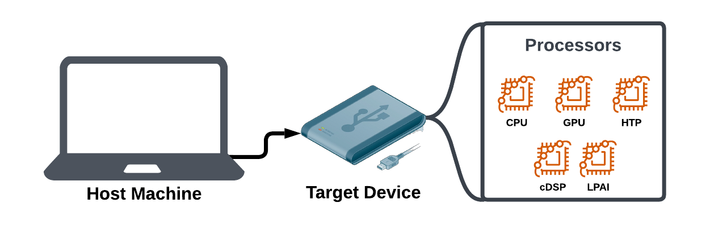

Setup¶
This Setup guide will help you install the SnapDragon Neural Processing SDK (commonly referred to as ”SNPE”) as well as all necessary dependencies for your use case.
Throughout these docs, we will refer to the “host machine” as the computer you are using to work with your AI model files. Meanwhile, the “target device” is the device that contains the information processing cores that will eventually run the AI inferences.

In some cases, as with some devices running Windows on Snapdragon, a single machine may be acting as both the “host machine” and the “target device”.
Follow one of the below guides based on the operating system your host machine is using:
Warning
Cross-compiling from a Windows host machine to a Linux target device is not supported.
If you are using a Windows host machine, you can either use Windows Subsystem Linux (WSL) or dual-boot your machine with a Linux image (Ubuntu 22.04 is recommended) to work with Linux / Android targets. If you use WSL, follow the Linux instructions below.
Once you have finished with the setup guide, you can follow the “Building and Executing a Model” Tutorial to understand how to use an AI model of your choice on your target device.